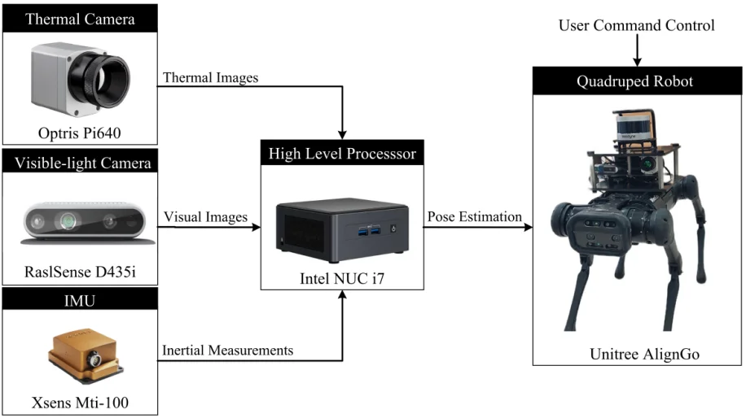

实验室简介
南开大学先进感知与控制实验室（Laboratory for Advanced Perception and Control，简称LAPC）目前汇聚了37名研究人员，其中包括3名教师、14名博士研究生和20名硕士研究生。实验室至今已出版专著1部，并发表SCI论文110篇，同时授权发明专利42项。此外，实验室承接了国家级项目14项、省部级项目13项以及横向项目5项，荣获包括河北省自然科学奖一等奖、天津市自然科学基金杰出青年项目、河北省自然科学基金杰出青年项目在内的17项重要荣誉。实验室学生获得了2项省部级优秀硕士学位论文奖及3项学术会议最佳论文奖。此外，众多毕业生已加入包括中国人民解放军空军、中国航空工业集团、中国船舶工业集团、中国电子科技集团、中国兵器工业团等国防重要单位，以及字节跳动、华为、美团、小米、网易、宁德时代等头部企业，还有的继续深造于新加坡国立大学、美国南加州大学、美国佐治亚理工学院、英国帝国理工学院、香港科技大学、香港中文大学等世界知名学府。
研究方向
新闻📢
- 2026.06，实验室一篇论文被计算机视觉领域顶级会议《European Conference on Computer Vision》接收。🎉
- 2026.06，实验室两篇论文被计算机视觉与图像处理领域国际学术会议《International Conference on Image, Vision and Computing》接收。🎉
- 2026.05，实验室一篇论文被人工智能领域顶级会议《International Joint Conference on Artificial Intelligence》接收。🎉
- 2026.03，实验室一篇论文被图像处理与计算机视觉领域高水平期刊 JVCIR 接收。🎉
- 2026.03，实验室一项利用视觉语言模型对齐跨域视觉特征的发明专利获得授权。
- 2026.01，实验室一篇论文被机器人与自动化领域顶级会议《IEEE International Conference on Robotics and Automation》接收。🎉
- 2025.12，实验室一篇论文被测量与智能感知领域高水平期刊《IEEE Transactions on Instrumentation and Measurement》接收。🎉
- 2025.12，实验室一篇论文被模式识别与人工智能领域顶级期刊《Pattern Recognition》接收。🎉
- 2025.11，实验室一篇文本到图像的行人重识别的论文被 ICEIC 接收。🎉
- 2025.11，刘晓滨老师受邀在河北工业大学分享复杂环境下目标充实识别的研究工作。⭐
- 2025.10，实验室一篇论文被智能控制与自动化领域高水平期刊《IEEE Transactions on Automation Science and Engineering》接收。🎉
- 2025.09，实验室一篇论文被人工智能与机器学习领域的顶级会议《NeurIPS 2025》接收。🎉
- 2025.07，刘晓滨在第十届ICIVC 2025获颁IEEE优秀报告奖。
- 2025.04，实验室获得2024年度天津市技术发明二等奖。
- 2025.03，实验室一篇论文被机器人顶刊《IEEE Transactions on Robotics》收录。
- 2025.01, 实验室获得第五届天津市“海河英才”创新创业大赛博士后揭榜领题赛三等奖。
- 2024.12，刘晓滨获得第六届交通运输工程全国优秀博士学位论文奖。
项目展示🔬

四足机器人电厂巡检跨模态感知实验平台
融合热成像、可见光、IMU 与激光雷达的跨光谱四足机器人平台，面向低可视度工业环境的自主巡检。在热电厂真实场景下实现长距离原点漂移 < 0.2 m、目标识别 mAP50 达 0.908。
查看项目详情 →